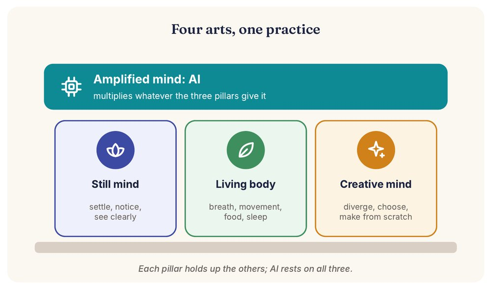
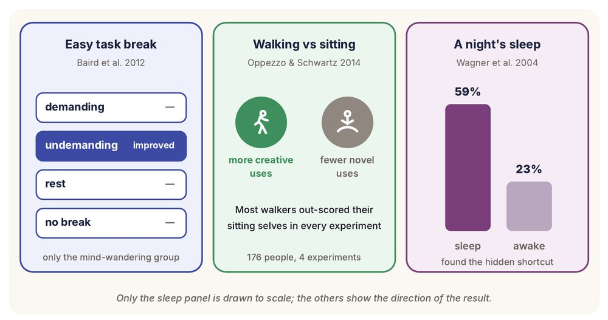
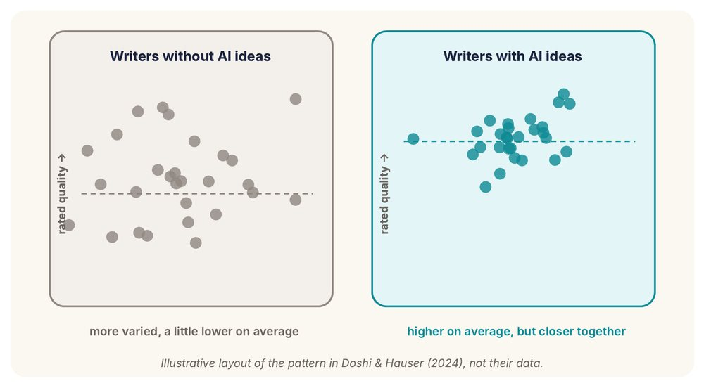
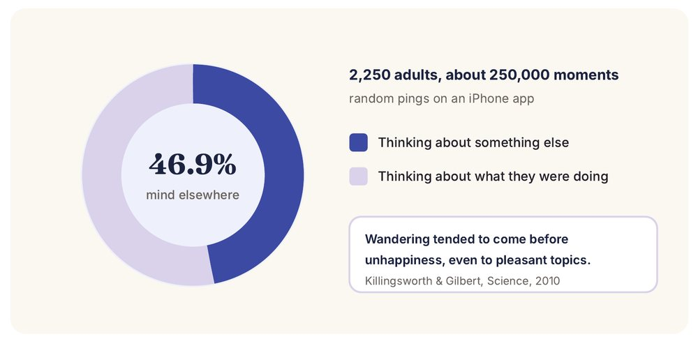
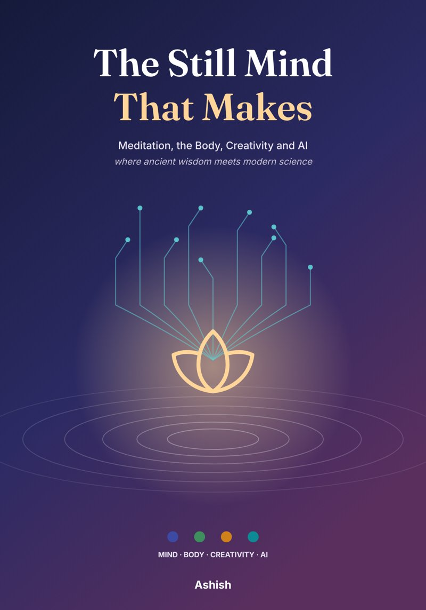

Meera
The founder who could not switch off.
A new book by Ashish · First edition, November 2026
Meditation, the body, creativity and AI, where ancient wisdom meets modern science.
Your best ideas rarely come when you try hardest. They come in the shower, on a walk, in the minute before sleep. This book explains why, and builds a daily practice around it: a settled mind, a rested body, a habit of making, and AI that multiplies what the other three give it.
The Build with Ashish Reel, narrated in Ashish's AI-cloned voice. Figures from the book.
Chapter 1 opens with a puzzle
“If ideas came from effort alone, they would arrive at the desk, under pressure, on deadline.”
Instead they slip in through a side door. A good idea needs four things at once, and the book gives each its own part.
Try it now · 2 minutes
The book compresses its seven-stage daily loop into five letters you can run before a big decision, a creative project or a long AI session. This is the two-minute version from Chapter 1. Press Start and follow along.
Five steps of about 24 seconds each. Read the prompt, then close your eyes if you like.
Part I · The four arts
Most books keep these on four different shelves. This one argues they lean on each other, so improving any one makes the others easier.
Settle your attention, watch thoughts without being dragged by them, come back to calm. Three families of meditation and ten teachers, each in their own words.
Breath, movement, food, sleep and rhythm. Four breathing practices, a movement menu, and simple anchors for sleep and meals.
Diverge and converge on purpose, use walks and sleep to incubate, and keep a daily 20-minute making practice.
AI as a thinking partner. The jagged frontier, how to brief it like a colleague, and the creative sandwich: you, AI, you.
AI comes last on purpose. A scattered person with AI produces more scattered work, faster.
Two ways of knowing
Every claim about health or performance carries an evidence badge, and every quotation names its source. When something hasn't been tested, the book says so. Four findings from inside:
of waking moments, people were thinking about something other than what they were doing, and they were less happy when their minds wandered.
Killingsworth & Gilbert, Science, 2010 · 2,250 adultsfound a hidden shortcut in a number puzzle after a night of sleep, against about 23% of those who stayed awake for the same time.
Wagner et al., Nature, 2004faster on realistic writing tasks for professionals given ChatGPT, with independent graders rating the work about 18% higher.
Noy & Zhang, Science, 2023 · 453 professionalsStories written with AI ideas were rated more novel and useful, yet became more similar to each other. Every writer gained; the group lost variety.
Doshi & Hauser, Science Advances, 2024Real pages from the book





Contents
The four arts · Two ways of knowing
The restless mind · Three families of meditation · Teachers of stillness · Your first practice
Breath, the bridge · The moving body · Food, sleep and rhythm
How ideas are born · Beginner's mind and the why · Making from scratch
AI as a thinking partner · Diverge with AI, converge yourself · AI for practice, health and building
A day built on QUIET · The 30-day plan · Three stories
Plus: afterword · answers · glossary · cheat sheet · prompt library · sources
Teachers include Patanjali, the Buddha, the Bhagavad Gita, the Ashtavakra Gita, Ramana Maharshi, Maharishi Mahesh Yogi, J. Krishnamurti, Shunryu Suzuki and Marcus Aurelius, alongside researchers such as Herbert Benson and Jon Kabat-Zinn. Each is quoted in their own terms, and where they disagree, the book says so.
Chapter 17 · The 30-day plan
Twenty to forty minutes a day. Each week adds one art on top of the last and repeats the old ones until they stick.
StillBuild a daily sitting habit and notice the mind.
BodyKeep sitting; add breath, movement and sleep anchors.
MakeKeep both; add a daily making practice.
AmplifyKeep all three; bring AI in with the sandwich method.
IntegrateReview, choose what to keep, and design your own day.
| Q | Ask once: “What actually matters today?” |
| U | Three long out-breaths |
| I | One short walk, or ten squats |
| E | Make one small thing: a sentence, a sketch, a fix |
| T | Hand one chore to AI so you have room for the rest |
Chapter 18 · Three stories
The founder who could not switch off.
The teacher who stopped making things.
The engineer who leaned on AI for everything.
The stories are composites built for teaching; people and numbers are illustrative.
What you get
Breath counting, the relaxation response, open listening and self-inquiry, with what the first month will feel like.
Cyclic sighing, slow breathing and more, with when to use each and when not to.
Weekly movement targets from the guidelines, strength snacks, and sleep and food anchors.
Five whys, first principles, beginner's mind and a daily 20-minute making loop.
Prompts for thinking, creating, practice and health, each with what to check in the answer.
A template day, the minimum day, the 30-day plan, and Test yourself questions with answers.
Get the book
| Book (PDF + EPUB) | ₹338.14 |
| GST 18% | ₹60.86 |
| Total | ₹399 |
Secure checkout by Razorpay: UPI, cards and netbanking. Price includes GST. Your download opens as soon as payment completes.
Also reading The Agent at Your Desk? Get both books together.
A 129-page PDF plus an EPUB for e-readers. It reads well on a phone, tablet or laptop and prints cleanly.
No. You need a place to sit, somewhere to walk, a notebook and any AI assistant. Most practices take five to twenty minutes, and none needs equipment, money or belief.
It quotes Indian, Buddhist, Zen and Stoic teachers in their own words, with sources, and sets them beside modern research. You don't have to believe anything to use the practices.
Any assistant works. The prompts are written so you can use them in Claude, ChatGPT, Gemini or whatever you already have.
No. The book discusses TM research but doesn't teach TM and isn't affiliated with any meditation organisation.
Yes, and it comes free with every purchase. शांत मन, जो रचता है is the full book in conversational Hindi, as a PDF and an EPUB. Prompts and source titles stay in English so they work as written.
Not medical advice. The book is for education and reflection. It doesn't replace a doctor, therapist or dietitian. Talk to a doctor before changing exercise, diet, breathing practice or medication. If you are in crisis, contact your local emergency number or a crisis line.
Store policies
You are buying a personal, non-transferable licence to one digital copy of The Still Mind That Makes (PDF and EPUB) and its companion files. You may keep copies on your own devices and print it for personal use. Please don't share, resell or upload the file. Prices are in Indian rupees and include GST.
Your download link opens straight after payment. If the download doesn't open or the file won't open, write to us and we'll resend it or refund you in full. Because the book is a digital download, we don't offer refunds once it has been delivered and opened, except for a duplicate payment.
We collect your name, email and phone number only to process your order, send the book and issue your GST invoice. Payments are handled by our payment provider; we never see or store your card or UPI details. We don't sell your data. You can ask us to delete your details at any time.
Questions about an order? Message @buildwithashish.ai on Instagram.